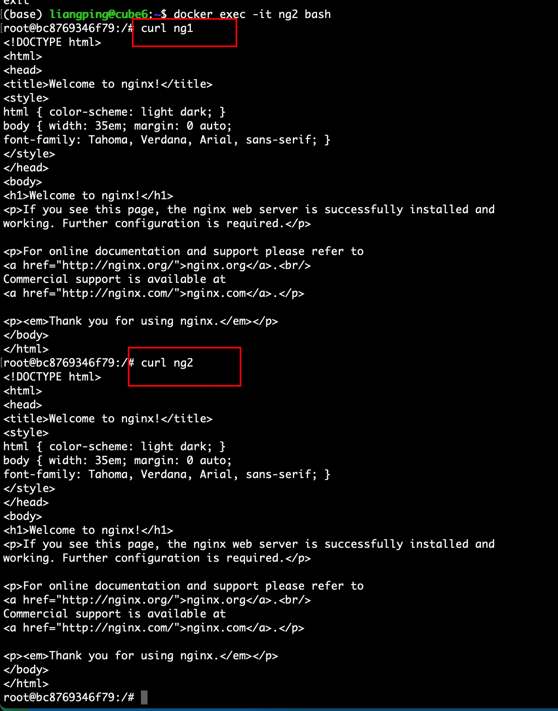

如果使用docker-compose
docker-compose 默认使用同一个network，可以直接通过service name进行相互访问
通过暴露端口到宿主机进行访问
如果服务是为服务，不需要外部访问，不建议这样做
自定义network
服务跑的时候指定network,然后通过容器名，就可以相互访问了
docker network create custom-local-net docker run --name ng1 --network custom-local-net -d nginx docker run --name ng2 --network custom-local-net -d nginx